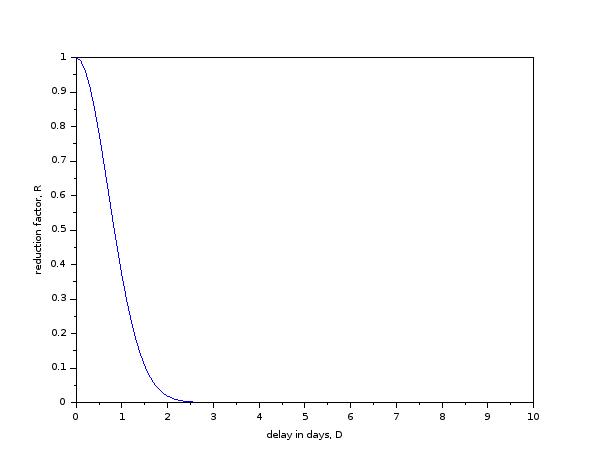

CE 304: Concrete Design - Spring 2024
Table of Contents
- Basic Information
- Course objectives, syllabus, books, pre-requisites
- Course Policies
- Calendar (tentative)
- [L1] Jan 03, Wed
- [L2] Jan 05, Fri
- Jan 08, Mon - no tutorial
- [L3] Jan 10, Wed
- [L4] Jan 12, Fri
- [T1] Jan 15, Mon
- Jan 17, Wed - no class
- [L5, L6] Jan 19, Fri
- Jan 22, Mon - no tutorial
- [L7] Jan 24, Wed
- Jan 26, Fri - no class
- [L8] Jan 29, Mon
- [L9] Jan 31, Wed
- [T2, T3] Feb 02, Fri
- [T4] Feb 05, Mon
- [L10] Feb 07, Wed
- [L11] Feb 09, Fri
- [T6] Feb 12, Mon
- [L12] Feb 14, Wed
- [L13] Feb 16, Fri
- Feb 19 - Feb 24: Mid semester exam week
- [T7] Feb 26, Mon
- [L14] Feb 28, Wed
- [L15] Mar 01, Fri
- [T8] Mar 04, Mon
- [L16] Mar 06, Wed
- Mar 08, Fri - no class
- [T9] Mar 11, Mon
- [L17] Mar 13, Wed
- Mar 15, Fri - no class
- [T10] Mar 18, Mon
- [L18] Mar 20, Wed
- [L19] Mar 22, Fri
- Mar 23 - Mar 31: Mid semester recess
- [T11] Apr 01, Mon
- [L20] Apr 03, Wed
- [L21] Apr 05, Fri
- [T12] Apr 08, Mon
- [L22] Apr 10, Wed
- [L23] Apr 12, Fri
- [T13] Apr 15, Mon
- [L24] Apr 17, Wed
- [L25] Apr 19, Fri
- [T14] Apr 22, Mon
- [L26] Apr 24, Wed
- Apr 25 - May 01: End semester exam week
Basic Information
| Class timings | Wednesday, Friday, 10:00-11:20 hrs |
|---|---|
| Class location | AB 7/101 |
| Instructor | Gaurav Srivastava (gauravs@iitgn.ac.in) |
| Tutorial timings | Monday, 17:00-18:20 hrs |
| Tutorial location | AB 7/206 |
| TA | Saurabh Sharma (sharmasaurabh@iitgn.ac.in) |
Course objectives, syllabus, books, pre-requisites
Objectives
- To learn the fundamentals of analyzing reinforced concrete structural members.
- To learn design of basic structural members of a reinforced concrete building.
- To learn overall structual design of a reinforced concrete building.
Syllabus
- Properties of concrete and steel.
- Design philosophies.
- Loads and load combinations.
- Analysis and design of beams, columns, slabs, stair case and shallow foundations.
- Ductile detailing.
- (if time permits: ) design of shear walls, seismic design.
Textbook
- Reinforced Concrete Design - S Unnikrishna Pillai and Devdas Menon.
Reference Books
- Limit State Design of Reinforced Concrete Structures - P C Verghese.
Required codes
- IS 456(2000): Plain and reinforced concrete - Code of Practice
- IS 875-1(1987): Code of practice for design loads (other than earthquake) for buildings and structures [Dead Loads]
- IS 875-2(1987): Code of practice for design loads (other than earthquake) for buildings and structures [Imposed Loads]
- IS 875-3(2015): Code of practice for design loads (other than earthquake) for buildings and structures [Wind Loads]
- SP 16(1980): Design aids for reinforced concrete to IS 456
- Please have a copy of the codes available during classes, tutorials and exams
Pre-requisites
- Good background in Mechanics of Solids.
- Good background in Structural Analysis.
- Curiosity to learn the fundamentals behind construction of some of the largest structures like Hoover Dam and Burj Khalifa.
Course Policies
Etiquette
- Please be considerate about everyone's time.
- In all emails pertaining to this course, please have "CE304" in the subject line.
- (note that there is no space or hyphen or anything between CE and 304)
Cheating
Cheating cases (assignments/codes/exams/project) will be dealt with in accordance with the Institute norms. It is expected that everyone will uphold the honor code.
Late submissions
All delays beyond the defined deadlines will attract reduction in marks as per the following curve. The reduction factor, \(R\) will be multiplied to the obtained marks. Mathematically, it is given by: \(R = \exp(-D^2)\), where \(D\) is the total delay in days (will be counted hourly, i.e. fractional days are possible).

Grading
Following will be the weightage of different components of assessment
| Component | Weightage |
|---|---|
| Homework assignments | 40% |
| In-class submissions | 15% |
| Tutorials | 15% |
| Exams (two) | 15% each |
Modes of formal assessment
- Tutorials will involve two types of problems:
- Set A: to be submitted within the tutorial hour and will be graded towards Tutorial weightage
- Set B: to be practiced outside the tutorial hour and will not be graded
- Assignments will entail analysis/design problems, practical problems, visit reports, etc.
- Exams will involve take home type analysis/design problems along with viva/presentations.
- Expect one assignment and tutorial per week.
- In-class submissions will comprise of small problems to be solved in-class (in groups).
Emphasis on self-learning
It is important to develop the habit of self-learning. A number of reading assignments and self-exercises will be given during the course. These will not be formally graded and it will be expected that students will go through them on a regular basis on their own.
Calendar (tentative)
[L1] Jan 03, Wed
- Introduction to design. Components of a building. Load path.
[L2] Jan 05, Fri
- Analysis of a building. Load calculations. IS 875-1. Characteristic loads.
Jan 08, Mon - no tutorial
[L3] Jan 10, Wed
- Load calculations. IS 875-2. Load path and distribution. Characteristic loads.
- Class activity 1
[L4] Jan 12, Fri
- Structural systems. Framed systems and their analysis. Typology of different components of structural system.
[T1] Jan 15, Mon
Jan 17, Wed - no class
[L5, L6] Jan 19, Fri
- Session on SAP2000
Jan 22, Mon - no tutorial
[L7] Jan 24, Wed
- Introduction to IS 456.
- Discussions on materials, constituents of concrete, characteristic strength, construction practices.
- Design philosophies. Partial safety factors.
- Properties of concrete.
Jan 26, Fri - no class
- Republic Day
[L8] Jan 29, Mon
- Design of RC beams.
- Concept of neutral axis of homogeneous and heterogeneous sections.
- Assumptions in the behaviour of RC beams. Concept of balanced, under-reinforced and over-reinforced sections.
- Analysis and design of singly-reinforced RC beams.
- Work Sheet 1
[L9] Jan 31, Wed
- Design of RC beams.
- Consideration of over-reinforced sections.
- Analysis and design of doubly-reinforced sections.
- Work Sheet 2
[T2, T3] Feb 02, Fri
- Session on SAP2000
[T4] Feb 05, Mon
- Assignment 1 (due 12 Feb)
- Failure modes of an RCC beam.
- Design of RC beams under shear.
- Work Sheet 3
[L10] Feb 07, Wed
- Design of RC beams.
- Consideration of T and L beams.
- Provisions of the Code for design of RCC beams.
- Work Sheet 4
[L11] Feb 09, Fri
- Design of RC columns.
- Work Sheet 5
[T6] Feb 12, Mon
- Tutorial 2
- Assignment 2 (due 26 Feb)
[L12] Feb 14, Wed
- Design of RC columns.
- Work Sheet 6
[L13] Feb 16, Fri
- Design of RC columns.
Feb 19 - Feb 24: Mid semester exam week
- Feb 23, 9 AM – 11 AM, AB 10/102.
[T7] Feb 26, Mon
- Tutorial 3
- Assignment 3 (due 4 Mar)
[L14] Feb 28, Wed
- Design of RC slabs.
- Behavior of slab as a plate, torsion near supported edges. Different cases of supporting conditions.
- One-way vs. two-way slab action.
[L15] Mar 01, Fri
- Design of RC slabs.
- Examples 5.2 and 5.3 of the Book.
[T8] Mar 04, Mon
- Tutorial 4
- Assignment 4 (due 11 Mar)
[L16] Mar 06, Wed
- Design of RC slabs.
Mar 08, Fri - no class
- Maha Shivratri
[T9] Mar 11, Mon
- Tutorial 5
- Analysis of RC building in SAP2000.
[L17] Mar 13, Wed
- Design of RC building components in SAP2000.
Mar 15, Fri - no class
[T10] Mar 18, Mon
- Tutorial 6
- Assignment 5 (due 1 Apr [no joke intended])
[L18] Mar 20, Wed
- Design of shallow foundations.
- Types of footings. Eccentricity. Failure modes and design considerations.
[L19] Mar 22, Fri
- Design of shallow foundations.
- Work Sheet 7
Mar 23 - Mar 31: Mid semester recess
[T11] Apr 01, Mon
- Tutorial 7
- Assignment 6 (due 8 Apr)
[L20] Apr 03, Wed
- Design of staircases.
[L21] Apr 05, Fri
- Design of staircases.
[T12] Apr 08, Mon
- Tutorial 8
- Assignment 7 (due 15 Apr)
[L22] Apr 10, Wed
- Design of staircases.
[L23] Apr 12, Fri
- Detailing and construction practices.
[T13] Apr 15, Mon
[L24] Apr 17, Wed
- Detailing and construction practices.
[L25] Apr 19, Fri
- Detailing and construction practices.
[T14] Apr 22, Mon
[L26] Apr 24, Wed
- Detailing and construction practices.